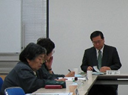

| 【日 時】 | 4月25日（金）11：30～12：00 |
| 【場 所】 | 埼玉県生協連・会議室 |
| 【参加者】 | 8人（新婦人、コーペル、母親連絡会、埼玉県生協連、生協ネットワーク協議会、事務局） |
オンブズ会議に先立ち（10：00～11：30）、埼玉県食品安全課・農産物安全課・畜産安全課との「第1回食の安全・安心消費者懇談会」が行われました。
| ■ | 議 題 | |||
| 1． | 今年度のオンブズ会議のメンバーおよび同会議設置要綱の確認を行いました。 委員交代等があった場合は随時報告することを確認しました。 |
 | ||
| 2． | 2008年度オンブズ会議開催予定日を提案しました。 6月のオンブズ会議での学習懇談会は「埼玉県における農業政策」をテーマで開催することが確認されました。 |
|||
| 3． | 2007年度活動のまとめ、2008年度活動計画（案）を提案し、パブリックコメントの提出を充実すること、さいたま市のアンケート結果などを考慮し、残留農薬や汚染物質についての学習等行うことを確認しました。 | ||
|
4． |
報告・資料提供等 | ||
| （1） | 2007年度第6回オンブズ会議（3/18）報告 | ||
| （2） | 「食品防御（Food Defense）とは？」（3/28）報告 2004年米国で制定されたバイオテロ法施行後のアメリカでの食の安全の取り組み、消費者は不安に思ったことを声に出して発信することが大切である事等を報告しました。 |
||
| （3） | 埼玉県、さいたま市、川越市の「平成20年度食品衛生監視指導計画」への要望に対 する対応について報告 |
||
| （4） | さいたま市食の基本方針アクションプラン＜平成20年度＞ 今年度初めて策定され4月1日から運用されています。計画期間は単年度で、今後毎年計画が策定されます。今年度の数値目標が明記され、食の安全対策がより実効あるものになります。 |
||